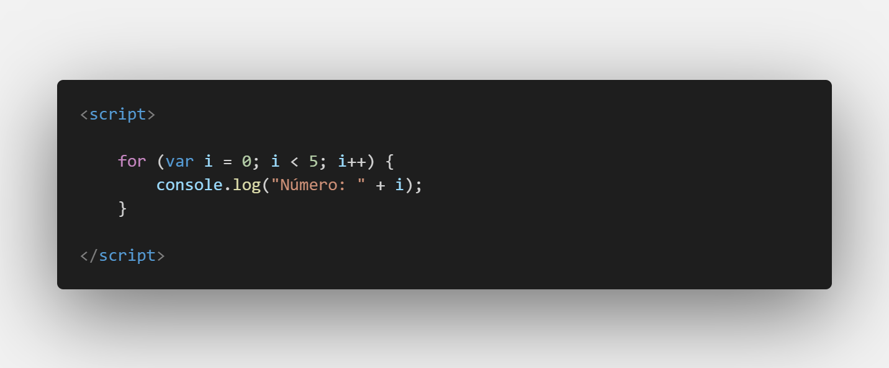
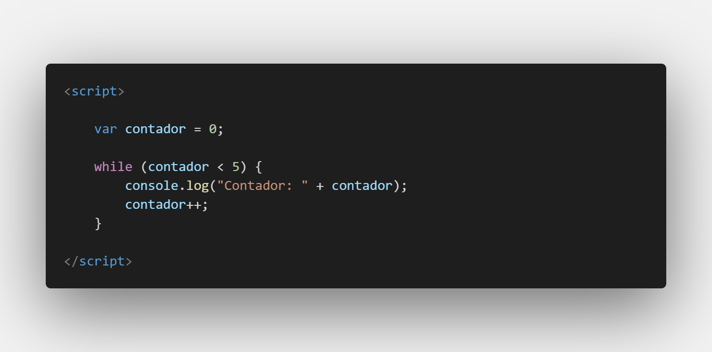
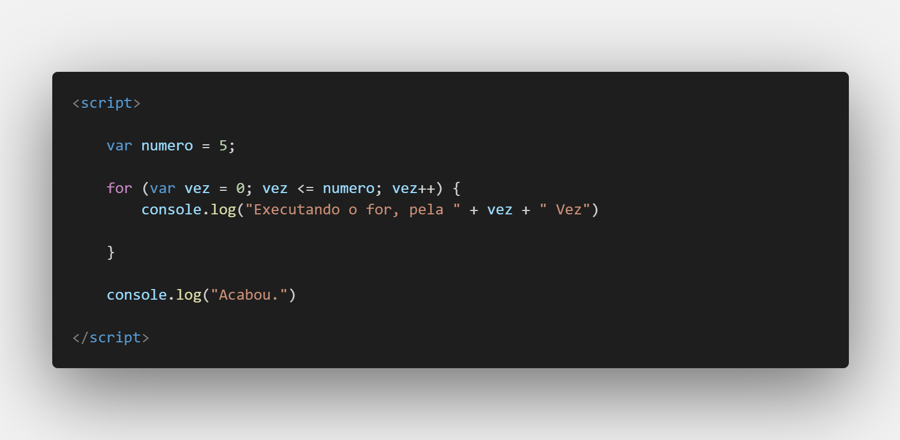
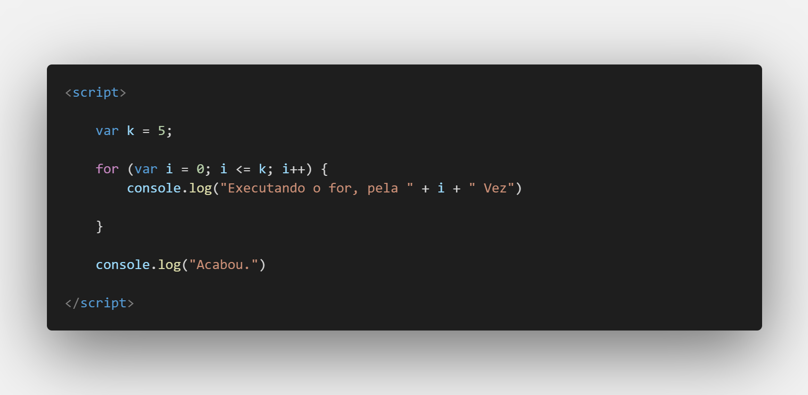
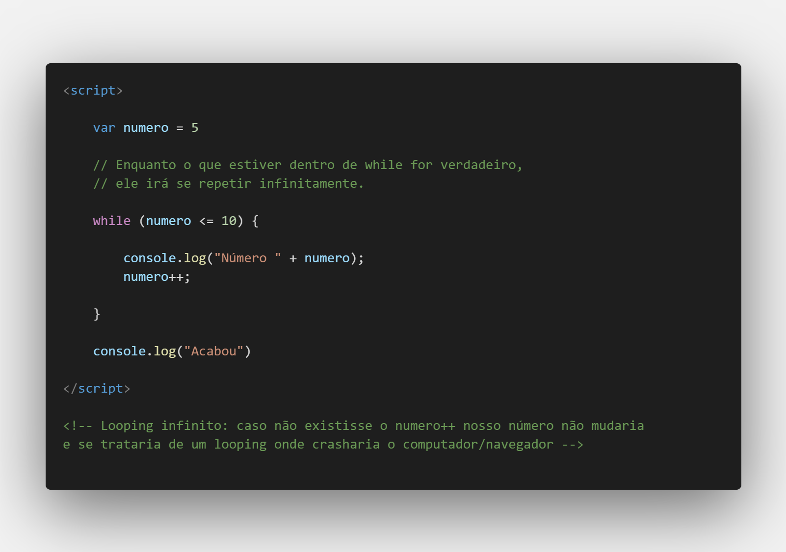
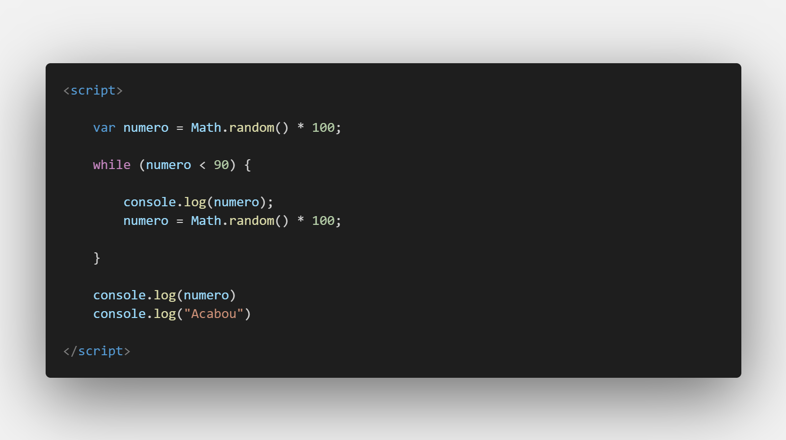

Aula 16/26 - Repetição - FOR e WHILE
As estruturas de repetição for e while são usadas em JavaScript (e em muitas outras linguagens de programação) para executar um bloco de código repetidamente, permitindo automatizar tarefas que requerem repetição. Elas são especialmente úteis para percorrer listas de elementos, processar dados ou executar ações até que uma determinada condição seja atendida.
Vamos ver como cada uma delas funciona, juntamente com exemplos:
Repetição com for
A estrutura for é usada quando você sabe a quantidade exata de iterações que deseja realizar. Ela é composta por três partes: a inicialização, a condição de continuação e a expressão final. O bloco de código é executado repetidamente enquanto a condição for verdadeira.
Sintaxe:
for (inicialização; condição; expressão_final) {
// Código a ser repetido
}
Exemplo:

Nesse exemplo, o código imprimirá os números de 0 a 4.
Repetição com while:
A estrutura while é usada quando você não sabe quantas iterações serão necessárias, mas quer repetir um bloco de código enquanto uma determinada condição for verdadeira. A condição é verificada antes de cada iteração, e a execução é interrompida quando a condição se torna falsa.
Sintaxe:
while (condição) {
// Código a ser repetido
}
Exemplo:

Nesse exemplo, o código imprimirá os números de 0 a 4, assim como no exemplo do for.
Ambas as estruturas de repetição são poderosas e podem ser usadas para realizar diversas tarefas, como percorrer arrays, processar dados em loops, interagir com o usuário até que uma ação seja realizada e muito mais. É importante tomar cuidado ao usar essas estruturas para evitar loops infinitos, onde a condição nunca se torna falsa, o que pode travar a execução do programa. Certifique-se de que a condição de parada seja atingida em algum momento.
Duas formulas iguais escritas de forma diferente.


Exemplo de while com especifícação no bug.

Último exemplo. Usando geração automática de números o Math.random()
